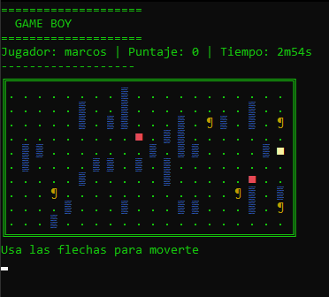

This is a game that is similar to the well-known Pac-Man.
This is the final version, it is one where a window opens in Windows where you can play the game quietly, which has point saving and the scenarios are random.
As you can see in the image there are ghosts which are the enemies you must avoid and there are fruits which you must eat/grab to pass the level.
the levels in theory are infinite since so far no one has played it for quite some time and it is not known how far the code is able to reach

We also made a version on the console but it is an old and abandoned version, but the gameplay is maintained
The fruits are the red squares and the enemies are the "¶" signs
and finally, a brief look at the main code (all this was done in programming class III)